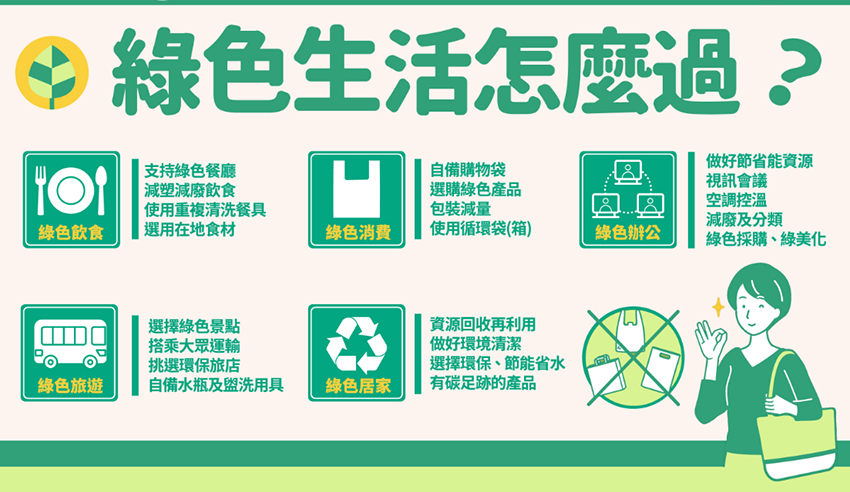

隨著科技發展不斷進步，生活也越來越便利。常常我們會因為方便，忽略掉環保減碳的重要性。無論你生活在哪裡，但我相信每個人都會喜歡呼吸到新鮮的空氣，安心享用豐富無汙染的美食，有乾淨的河岸和沙灘能散步玩耍，去過的美好旅行地可以一訪再訪，尚未到訪過的景點能一直存在地球上等著你的探訪…其實這就是永續發展、淨零排放的目的，不僅是愛地球、愛環境，更是愛家人、愛自己的表現。
以下說明我們常聽到的淨零排放與碳中和是什麼？
淨零排放（Net Zero）又稱作淨零碳排，最早出自2015年時各國簽訂的《巴黎協定》中，約定2050年實現淨零排放，使所有人為製造的溫室氣體，包含能源和非能源排放量極小化，再用碳捕捉 、森林碳匯等方式，將造成溫室效應的氣體儲存起來或再利用。要達成淨零排放，除了要考慮二氧化碳排放量外，甲烷、氧化亞氮等溫室氣體都在清零的目標中，最終希望能夠在經濟發展和維護環境間取得平衡。
碳中和（Carbon Neutrality）則僅針對二氧化碳排放量，規定政府、組織或一般企業需定期排查所製造的二氧化碳排放量，並採取減量或抵換等措施，使大氣中的二氧化碳藉由使用再生能源、植樹造林和節能減碳的方式達到平衡，甚至減少的狀態。
無論是淨零排放還是碳中和，都是為了減少能源和資源的排放。聯合國政府間氣候變遷專門委員會（IPCC）2022年2月公布第六次評估報告（IPCC AR6）指出，全球暖化將在近20年內升溫至攝氏1.5度，多種氣候危害的增加，如極端氣候災難、熱浪、生物多樣性喪失等，全球皆無法倖免。這些危害衝擊到了能源、水資源與糧食安全，並造成許多居住地與生物棲地的喪失。全球的溫室氣體排放量需於2025年達成零排放，才能達到永續環境的目標，避免各地因氣候變遷，使飢荒、水患和火災不斷上演，威脅到人們的生命安全。
愛地球、做環保並不是遠大的題目，我們在日常生活中的任何一個小舉動都可能是關鍵，也都可以是幫助。要怎麼開始綠生活？我們可依循政府推動的「綠色飲食」、「綠色旅遊」、「綠色消費」、「綠色居家」、「綠色辦公」、等5大面向著手，並聚焦「用在地」、「惜資源」及「護環境」，在政府帶頭下，大家一起從個人居家生活到辦公綠生活，乃至日常生活都能落實節能減碳。
(一)綠色飲食：
改變生活飲食習慣的行為，如吃多少點多少、剩食打包減少廚餘，優先選用在地、當季及天然之食材，多吃蔬食、全食材料理及自 備餐具，充分珍惜食物、減少浪費。
(二)綠色旅遊：
在旅遊的過程中選擇對環境友善的方式，如自備水瓶及盥洗用具、續住不更換床單毛巾、優先搭乘大眾運輸，並依環保、低碳方向 規劃旅遊行程，降低環境負荷、維護自然景觀生態，體驗在地綠色旅遊模式。
(三)綠色消費：
適度消費、源頭減量，消費時自備購物袋，優先選擇對環境衝擊較低的綠色產品，降低塑料與化學品使用，產品使用過程節省能資 源，延長物品使用壽命，並將廢棄產品回收再利用。
(四)綠色居家：
透過調整生活方式，如居家使用自然採光、通風、選購環保產品、做好環境清潔與綠化、垃圾分類回收、節約用水用電、汰換老舊 家電及二行程機車等，建立友善居住環境的生活態度。
(五)綠色辦公：
在工作環境做好節省能資源（省水、省電、省油及省紙），視訊會議，室內空調控溫，設備節電控制，減少搭乘電梯，減少使用免 洗餐具及包裝飲用水等一次性用品，垃圾分類與資源再利用，綠色採購，環境綠美化，宣導員工差旅多搭乘大眾運輸、活動選擇綠 色場域及落實辦公室做環保工作。
|  |
| （資料來源：行政院國家永續發展委員會，行政院官網） |
大家趕緊一起開始行動吧~ 讓我們透過食、衣、住、行、育樂、購各個層面來執行，舉手之勞做出改變，共創低碳、永續又美好的世界。